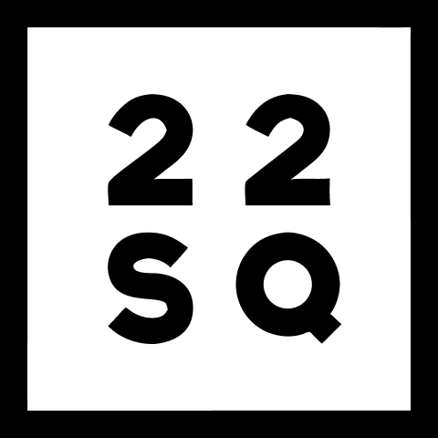
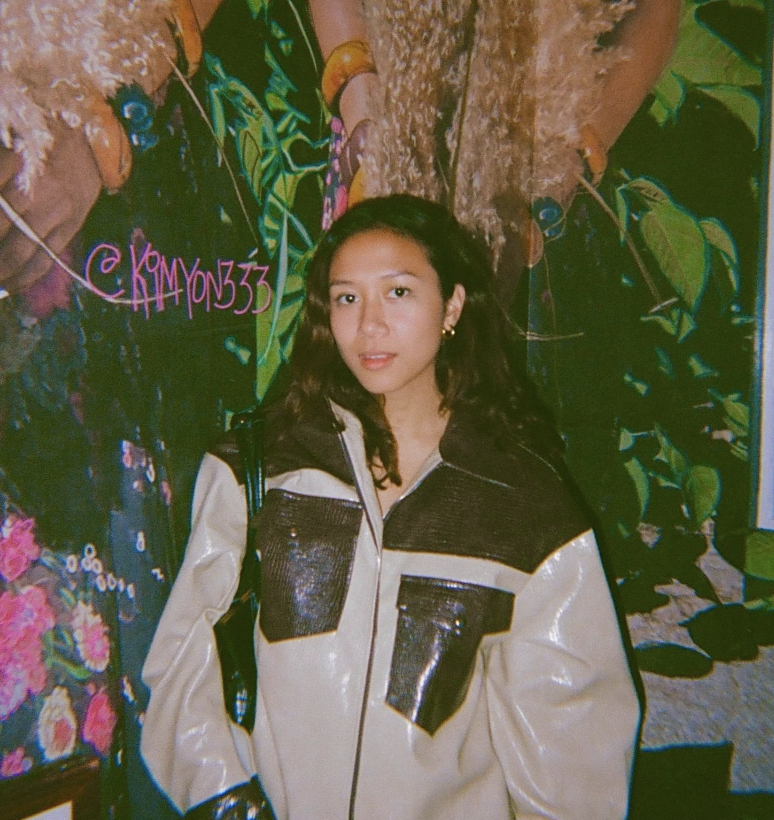

Nice To Meet You!
Maura
Munaf is a Senior Copywriter based in
New York City, but born
and raised in Jakarta,
Indonesia. She despises anything bland, so she
chases full-body flavor and playfulness in
everything she
writes.
Come to her with your
skincare haul and
favorite movie line.
Before that, at
and

